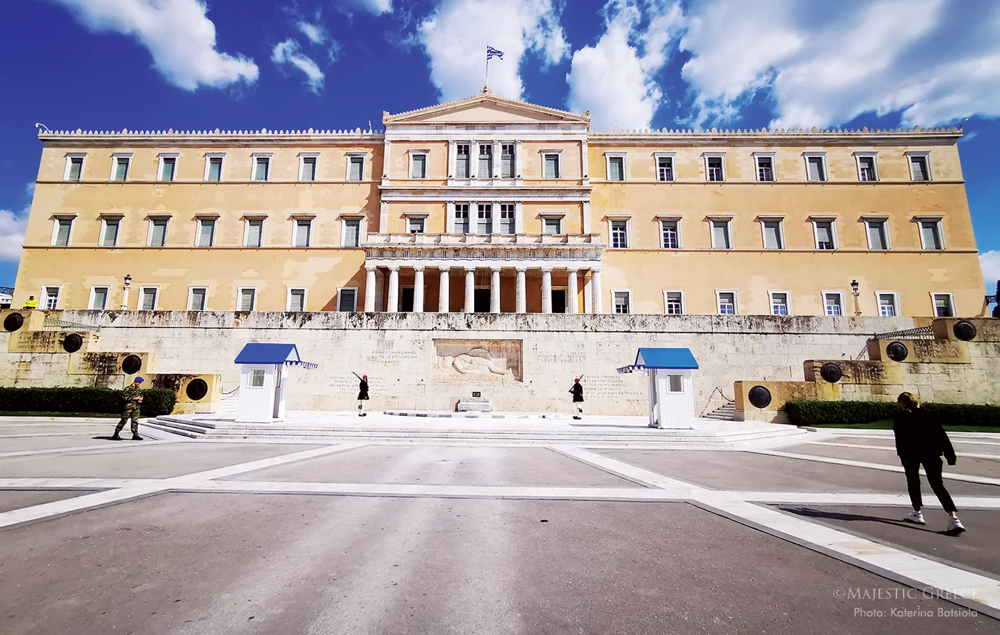
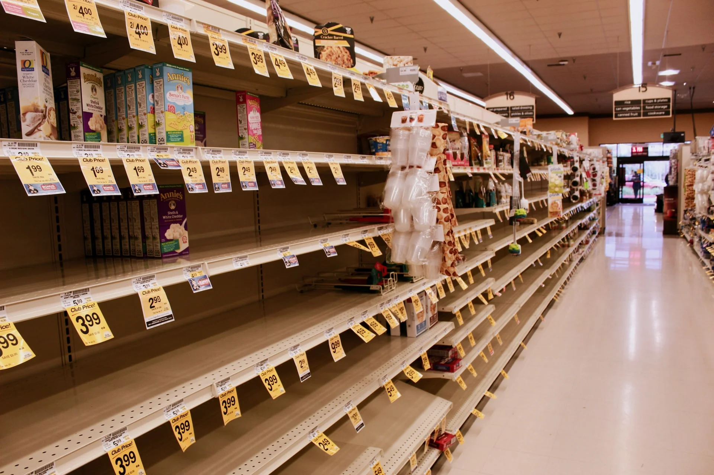
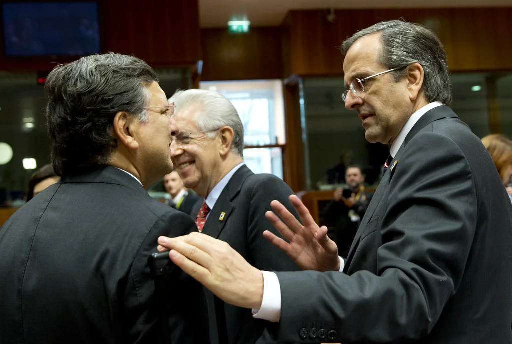
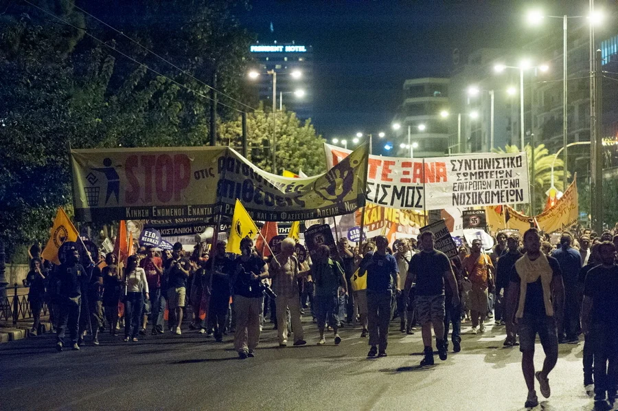

Τι μου εμαθε το δημοψηφισμα του 2015
Σε αυτή τη σελίδα θα διαβάσεις μερικές σκέψεις για το διχαστικό και αχρείαστο ελληνικό δημοψήφισμα του 2015 και την μετέπειτα συναίνεση που κακώς δόθηκε.
Γυρνώντας πίσω στην κομβική ημερομηνία της 14ης Αυγούστου 2015, ημερομηνία ψήφισης του 3ου μνημονίου, εντοπίζονται συντριπτικά λάθη της τότε αντιπολίτευσης, που επέτρεψαν στους "επαναστάτες" του βουνού να γίνουν άνθρωποι της πόλης και υπουργοί, πρωθυπουργοί, με ύφος και κύρος.
Οι κυβερνητικές απώλειες ήταν συνολικά 44, αφήνοντας την πλειοψηφία με 118 πρόθυμους βουλευτές. Έχουν προηγηθεί 6 μήνες "ηρωικής" διαπραγμάτευσης - παρωδίας, ένα διχαστικό δημοψήφισμα και υπογραφή ενός ντροπιαστικού μνημονίου με μέτρα που ο λαός ποτέ δεν διανοήθηκε ότι θα έπαιρνε ο Τσίπρας.
Η επίσημη δικαιολογία όλης της αντιπολίτευσης τότε, ήταν ότι ψηφίζουμε για να μείνουμε στο ευρώ. Αλλά για μια στιγμή. Είναι πραγματικό αυτό? Ποτέ δεν έχω ακούσει ένα ολοκληρωμένο σενάριο για την περίπτωση καταψήφισης απο την αντιπολίτευση, πέρα απο ένα γενικό "θα μας έδιωχναν απο το ευρώ".
Ας τα πάρουμε με τη σειρά να δούμε τι ακριβώς θα συνέβαινε σε περίπτωση καταψήφισης:
1. Το 3ο μνημόνιο υπερψηφίζεται απο 118 βουλευτές. Η κυβέρνηση πέφτει και προκηρύσσονται άμεσα εκλογές για τις 20 Σεπτεμβρίου.
2. Η Ευρώπη απειλεί με έξοδο απο το ευρώ και επικρατεί χάος με ήδη κλειστές τράπεζες.
3. Ο αντιστασιακός ελληνάκος δεν μπορεί να βγάλει ούτε τα 420 ευρώ την εβδομάδα αφού τα αεροπλάνα με τα μετρητά σταματούν να απογειώνονται.
4. Η κυβέρνηση στα τέλη Αυγούστου αδυνατεί να πληρώσει μισθούς και συντάξεις αφού έχει ήδη ροκανίσει τα αποθεματικά απο παντού με τις γελοίες διαπραγματεύσεις Βαρουφάκη.
5. Παντού επικρατεί χάος και πανικός. Οι εισαγωγές σταματούν και σούπερ μάρκετ - βενζινάδικα σύντομα ξεμένουν απο εμπόρευμα.
6. Ο μέσος Έλληνας αντιλαμβάνεται ότι ο τσαμπουκάς έχει συνέπειες. Γιατί καλή η αντίσταση αλλά πάντα με γεμάτο πορτοφόλι. Αν αδειάσει, αρχίζουμε να στήνουμε κρεμάλες.
7. Να θυμίσω ότι βρισκόμαστε σε προεκλογική περίοδο που το κλίμα έχει ως εξής:
α. Ο ΣΥΡΙΖΑ κατεβαίνει ουσιαστικά χωρίς προεκλογικό πρόγραμμα αφού τι να πεις σε κάποιον που έμεινε χωρίς σύνταξη, τρόφιμα και πετρέλαιο. Στο συλλογικό υποσυνείδητο καταγράφεται σαν ένας τύπος που αντί να σκίσει το μνημόνιο, απέτυχε να περάσει ένα καινούριο. Μέσα ή έξω απο την Ευρώπη, ότι και να έλεγε τότε, η δύναμη του χάους θα το υπερκάλυπτε. Ο κόσμος απλά δεν θα άκουγε.
β. Πλήρης επιβεβαίωση της Νέας Δημοκρατίας αλλά στην πραγματική ζωή. Γιατί άλλο να βλέπεις την καταστροφή σε διαφημιστικά, πολύχρωμα, προεκλογικά σποτάκια και άλλο να κάθεσαι σε ένα σπίτι με άδειο ψυγείο και άδειο στομάχι.
8. Το ένστικτο της αυτοσυντήρησης είναι το πιο ανεπτυγμένο στον ανθρώπινο εγκέφαλο. Η προ 6 μηνών ζωή, σε σχέση με την σημερινή κόλαση θα οδηγούσε ακόμη και ψηφοφόρους του σκληρού ΚΚΕ στην αγκαλιά του Σαμαρά (που ποτέ δεν έπρεπε να έχει παραιτηθεί εξαιτίας του ανόητου δημοψηφίσματος αλλά να τα κατατάξει εκεί που έπρεπε, ως ανόητο).
9. Η Ν.Δ κερδίζει τις εκλογές με 60% και επιστρέφει στους ωρυόμενους Ευρωπαίους για διαπραγματεύσεις.
10. Οι Ευρωπαίοι όσο θυμωμένοι και αν ήταν, δεν είχαν κάποιον μηχανισμό να θέσουν τη χώρα εκτός ευρώ. Να θυμίσω πόσο θυμωμένοι ήταν μετά το "ΟΧΙ" του δημοψηφίσματος αλλά το κατάπιαν συντόμως χάριν του "ευρωπαϊκού καλού". Οι επόμενες διαπραγματεύσεις θα οδηγούσαν οπωσδήποτε σε μια συμφωνία ενδεχομένως χειρότερη και απο αυτή του Τσίπρα. Αλλά σε καμία περίπτωση 40 ημέρες χάους δεν θα έκαναν τόσο μεγάλο κακό, όσο τα 4 χρόνια Τσίπρα που ακολούθησαν.
11. Σύντομα η ομαλότητα επιστρέφει και ο ελληνάκος ξεχνάει τις επαναστάσεις για καμιά εικοσαριά χρόνια. Βάζει την αριστερά μια και καλή στο χρονοντούλαπο της Ιστορίας οπου και ανήκει και χαίρεται την κανονικότητα που επανέρχεται με ταχύς ρυθμούς.
12. Η Αριστερά θα άφηνε τραύματα που δύσκολα ξεχνιούνται και σίγουρα στις εκλογές του 2019 που θα ακολουθούσαν δεν θα ήταν ρυθμιστικός παράγοντας αλλά μια μαύρη σελίδα, κάτι σαν ατύχημα μετά απο άγριο μεθύσι που το θυμάσαι την επόμενη και κοκκινίζεις απο ντροπή.
Αυτά νομίζω ότι χάσαμε επειδή η τότε αντιπολίτευση αποφάσισε να στηρίξει τον μεγαλύτερο, ίσως, πολιτικό απατεώνα που γνώρισε η χώρα. Γιατί την πολιτική στήριξη την δίνεις σε αυτόν που την αξίζει, όχι στον κάθε τυχάρπαστο που καβαλάει ένα συγκυριακό κύμα οργής υποσχόμενος τα πάντα στους πάντες.